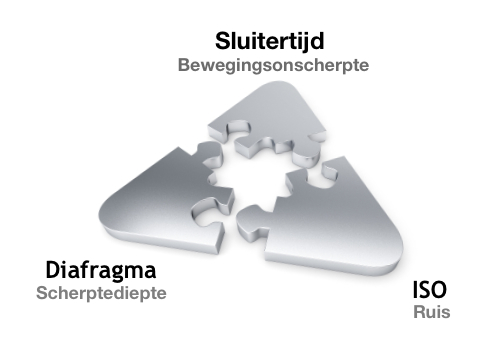

Belichting
Je zou kunnen zeggen dat licht het belangrijkste is bij fotografie. Zonder licht geen foto, zonder goed genoeg licht een onduidelijke/verkleurde foto.
De belichtingsdriehoek
De uiteindelijke belichting op de foto van een scène, hoe donker of licht, wordt bepaald door een samenspel van het diafragma, de sluitertijd en de ISO lichtgevoeligheid. Denk aan een driehoek waarbij elk element een hoek inneemt en een gelijk effect heeft op de uiteindelijke belichting.
Het diafragma bepaalt hoeveel licht er op de sensor valt. Hoe groter het getal achter f/, hoe kleiner de diafragma opening en hoe minder licht de sensor kan bereiken. De sluitertijd bepaalt hoe lang het licht op de sensor valt. Hoe langer de sluitertijd, hoe groter de kans op bewegingsonscherpte door trillingen in camera en lens. De laatste component, de ISO lichtgevoeligheid, bepaalt hoeveel invloed het licht dat op de sensor valt heeft voor de uiteindelijke belichting. Hoe groter de ISO waarde, hoe groter de kans op nadelige ruis in de foto.
Een wijziging van één van de instellingen heeft direct gevolgen voor de weergave van de scène op de sensor. Elke wijziging betekent minder belichting, een halvering van de hoeveelheid licht die op de sensor valt, of meer belichting, een verdubbeling van de hoeveelheid licht dat op de sensor valt. Het verschil in de hoeveelheid licht die op de sensor valt naar aanleiding van een wijziging in deze instelling wordt uitgedrukt in ‘stops‘ of ‘exposure value (EV)’.
Elke verandering van één van de elementen moet een gevolg hebben voor één van de andere elementen, bij een gelijkblijvende belichting. Als je bewust op zoek bent naar een bepaald effect, dan kun je dit principe los laten en compenseren.